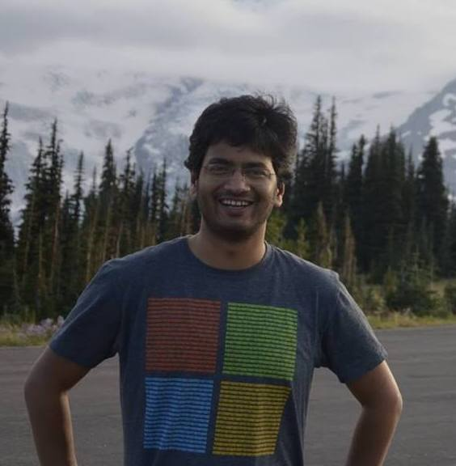

Hi! I'm Vaibhav Gogte.
I am a Software Engineering at Google.
I am a Software Engineering at Google.
I graduated with a PhD in Computer Science and Engineering from University of Michigan. At Michgan, I was advised by Prof. Thomas Wenisch. I also worked closely with Prof. Peter M. Chen and Prof. Satish Narayanasamy. I received my Masters in CSE from University of Michigan, Ann Arbor in 2016 and graduated with a B.E. in Electrical and Electronics Engineering from Birla Institute of Technology and Science, Pilani, India in 2011. Prior to joining the PhD program at Michigan, I worked at Texas Instruments, Bangalore in Microprocessor Unit Division. At Texas Instruments, I designed ARM based processor subsystems for SoCs based on OMAP platforms.
I am currently working on the architecture support for integrating non-volatile memories (NVMs) into future computing systems. NVMs attempt to bridge the byte-addressable volatile memory and block-addressable persistent storage. I am exploring programming interfaces for storing recoverable data structures in NVMs. I have also worked on custom hardware accelerators for processing unstructured data at memory bandwidth available in modern system architectures.
Office Address: Room 4849,
2260, Hayward Street,
Ann Arbor, MI 48105
Email: vgogte [at] umich [dot] edu